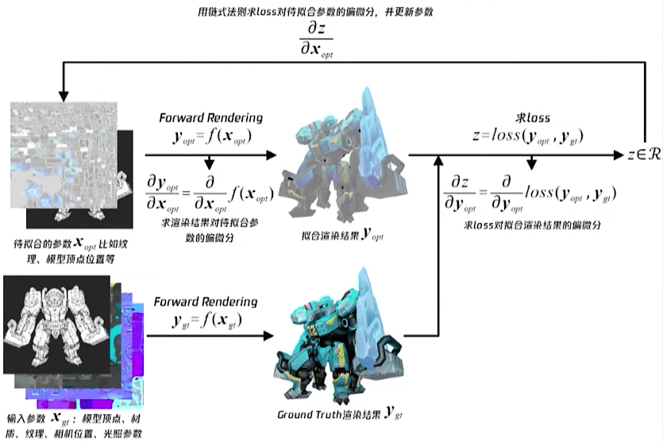
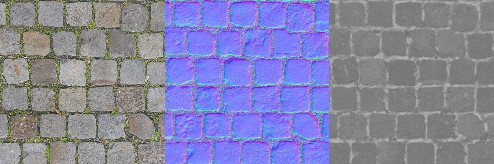
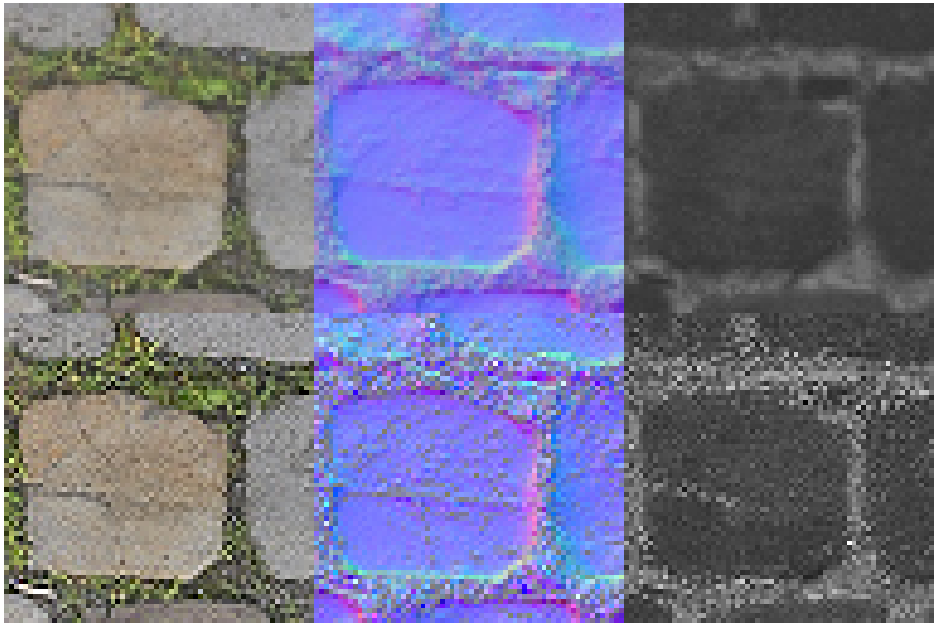
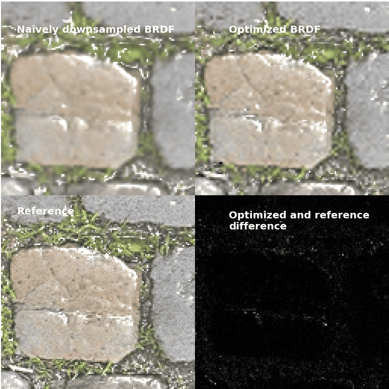

可微渲染实验1：纹理贴图LOD自动优化
本系列实验是笔者参与2023腾讯游戏课题的一部分，代码已开源。
实验背景
渲染过程是相机、场景二元组到图像的映射。在许多游戏应用中，往往会用到 LOD 技术，以减轻屏幕中小目标的渲染压力。采样小像素目标的纹理时，往往使用 mipmap 技术，主要是为了避免采样精度不高导致的摩尔纹等问题。
不过，本次实验解决的纹理贴图 LOD 问题与采样精度无关，它的背景主要是在低端设备上在达到性能要求，并且最大程度上保持贴图的高频细节。
可微渲染技术
具体地，现在艺术家已经产出了一系列高清纹理贴图，它们用于 PBR 或其他高级光照模型。然而，在低端设备上：
- 显存可能不足以保存这些高清贴图，或者
- 可能只能运行低级光照模型，为此，需要烘焙出传统的颜色贴图（color map），甚至顶点色（vertex color）取代 PBR 贴图
为了避免艺术家做重复工作，可微渲染技术应运而出。首先，我们需要根据目标低端设备的渲染过程，设计一个可微化的版本，称之为可微渲染 \(D\)，然后：
- 首先，我们运行一个最高级的渲染过程，产出一个最优结果 \(T\)，作为我们的优化目标。
- 随后，初始化待优化的贴图组 \(I\)，将之通过 \(D\) 渲染出结果 \(O_i\)，计算损失函数 \(L = \text{avg}((T - O_i)^2)\)，反向传播梯度至 \(I\)，修改 \(I\) 的参数。
- 训练循环：重复 2. 若干次直到 \(L\) 收敛。
- 得到一套优化过的贴图组 \(I\)，其在低端设备下的渲染结果 \(O_n\) 在其参数空间中严格与目标结果 \(I\) 最一致。
通过该过程，即可
- 将原来的 PBR 高清纹理贴图下采样，并保持一定的高频细节，此时渲染效果也会保持一定的高频细节，或者
- 烘焙出一个理论最优的颜色贴图或顶点色参数组，在低级光照模型下的渲染效果与最高级的渲染最一致。当然，在优化时需要注意避免陷入局部最优解。
上述过程的可优化对象不仅限于纹理贴图，模型几何、着色器参数等都是可以优化的对象。
在生产实践中，腾讯的 Mythal 就是基于此原理的一个可微渲染的智能资产辅助生产系统，如下图所示：

Slang 着色语言和自动微分
Slang 是一个新颖的着色语言（shading language），具有模块化和面向对象的语言特性，以及完整的编译工具链，可生成 GLSL、SPIR-V、DXBC 甚至 CUDA、C++ 代码，可集成性强。Slang 最初由 NVIDIA 内部开发，后移交给 Khronos Group，开源社区活跃，更新迭代迅速。Slang 还集成了自动微分功能，特别适合可微渲染的实现，因此本系列实验将使用 Slang 作为 GPU 后端语言。
经过社区的长期努力，Slang 已经可以通过 SlangPy 和 Slang-Torch 与 PyTorch 和 CUDA 深度集成，这意味着我们的开发过程可以使用许多现成的轮子，如 PyTorch 作为前端带来的多项便利：CPU-GPU 张量共享、自动梯度传递框架、训练框架等。
由于 Slang 的迭代迅速，在开始实验前，请务必参考官方 GitHub 仓库中的文档信息，并试着配置环境后运行几个官方样例，以适应最新版 Slang 的特性：
- Slang（https://github.com/shader-slang/slang）
- SlangPy（https://github.com/shader-slang/slangpy）
- Slang-Torch（https://github.com/shader-slang/slang-torch）
另外，出于众所周知的原因，实验最好在支持 CUDA 的软硬件环境下进行。
实验目标
本实验中，我们将在指定视角和随机光照下，优化一个平面模型表面的 PBR 纹理贴图在分辨率较低（LOD 等级高）时的表现，即在低分辨率下尽可能保持纹理贴图的高频细节。
训练过程中，我们将在模型的指定表面半球面上随机生成光照，并在最终渲染测试时指定一个固定光照角度。
当然，实际生产实践中，可以将视角也随机化，这样就要同时渲染这些视角下的高清图，进而正确进行优化。在实际项目中，很多游戏模型的用户视角会集中在一些角度附近，因此不必考虑在单位球上均匀采样视角。不过，本实验中为简便起见，没有对视角进行随机化处理。
实验过程
准备资产
我们假设模型是平面，因此不必显式给出几何数据。我们的相机将是一个从顶端看向模型的固定正交相机。
模型表面的 PBR 贴图 (diffuse, normal, roughness)
已经准备好：

编写着色器（Slang 后端）
本实验中，生成参考图像和训练循环中的着色器保持一致，即一般 PBR shader。受益于 Slang 良好的语言特性和与 PyTorch 结合的自动微分功能，我们编写 shader 时不必过多考虑模块化问题，并且不必考虑反向传播的代码实现。
- Slang 原生的语言特性即支持面向对象编程，也支持位级别的面向数据编程。
- 如果希望编译器为某个函数生成微分，只需为其声明
[Differentiable]。这样，再配合 PyTorch 的autograd.Function框架，自行实现 forward（前向渲染）和 backward（反向传播）数据组织，调用 Slang kernel 即可。 - 如果希望减轻编译器对函数微分的压力，可以指定某些 Slang 变量为
no_diff，编译器会认为它们是训练时常量，不会生成其反向传播的代码。
在采样纹理时，由于纹理不是普通的 Texture，而是可优化的
DiffTensorView
类型，因此需要专门实现一个对其可微的采样函数。可以参考如下的代码实现对纹理本身可微的双线性插值采样：
1 | [Differentiable] |
实现 Python 前端
前端用 NumPy 配合 PyTorch 组织 CPU-GPU 数据，例如生成随机光源数据，向训练过程传参等。
我们将调用 PyTorch 实现训练循环，完成“学习”任务，即使用基于梯度的方法求解目标函数的局部最小值的过程。损失函数为
1 | torch.mean((outputImage - targetImage) ** 2) |
即每次渲染结果与目标结果之间的均方误差，这一误差是每像素累计计算的。
利用 slang
的自动微分，整个光栅化过程都是可微分的，因此梯度的后向传播成为可能。我们可以利用
torch 框架的 torch.autograd.Function，为学习循环（learning
loop）的前向光栅化-后向梯度传播调用过程提供便利。
优化结束后，使用简单下采样（取 2*2 像素块平均值）与优化后的纹理贴图，分别进行前向渲染，比较渲染结果。渲染结果和贴图优化结果使用 Matplotlib 绘制。
实验结果
下图中，第一行为简单下采样的纹理贴图，第二行为优化后的纹理贴图（均为局部）。可见，优化后的纹理贴图更好地保留了高频细节。

下图中，第一行分别可见使用简单下采样的纹理贴图、使用优化后的纹理贴图的渲染结果。与使用原高清贴图渲染的结果相比，优化后的纹理贴图的渲染结果同样更好地保留了高频细节。

、由此，我们初步领悟了可微渲染在优化贴图资产方面的威力——这一过程是数学上最优的，并且可解释性很强。使用可微渲染流程，也意味着能在系统的上下游加入各种各样的神经网络，拓展系统的能力。
在下个实验中，我们将一窥可微渲染在优化几何参数方面的威力，并试着完成一次简单的几何重建。